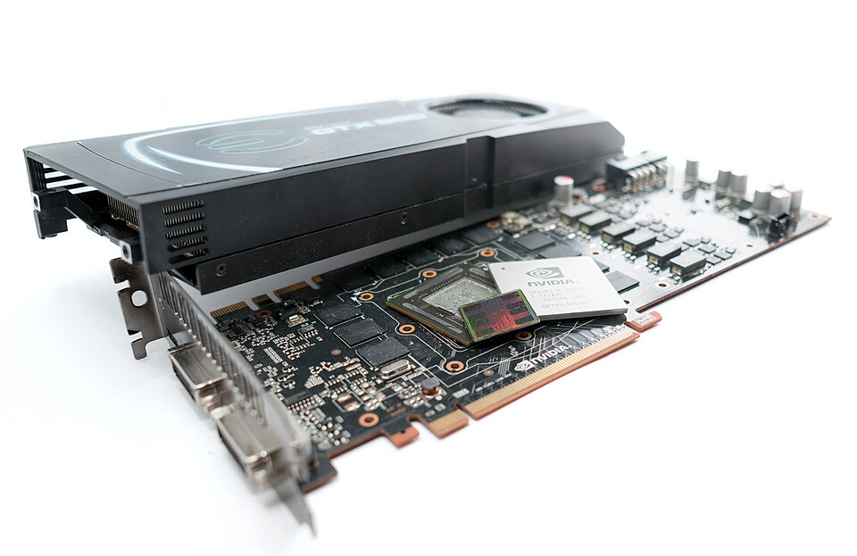

1979–80
Neocognitron
Kunihiko Fukushima builds a layered network of small, repeated feature detectors that inspired convolutional networks.
← AI news: how a machine learns
In 2012 a neural network called AlexNet won an image-recognition contest by a margin nobody expected. Its recipe was not new. What was new was how it was computed: everything turned into vectors and matrices, so a graphics card could do millions of the same small calculation at once.
This page walks through that idea one step at a time, with the math, and lets you play with each step.
This is a summary, not original research. It follows the 2012 paper “ImageNet Classification with Deep Convolutional Neural Networks” by Alex Krizhevsky, Ilya Sutskever and Geoffrey Hinton, plus my own study notes. Everything interactive here was built to explain their work.

On the last page a one-layer model scored a whole digit against one rigid template: W @ x. That is a dot product. This page asks what happens if the templates are small, slide across the picture, and are stacked in layers.
Take two lists of numbers of the same length. Multiply them pair by pair, then add up the results. That is a dot product. If both lists are large in the same places, the answer is large. If one is large where the other is small, the answer is small or negative. So a dot product measures how much one list looks like the other.
In AlexNet the first list is a small patch of the image. The second is a kernel: a little template of weights. A dot product is biggest when the patch looks like the kernel. The kernels are not written by hand. Training finds them.
a · b = a1b1 + a2b2 + … + anbn = |a| |b| cos θ
The right-hand form says the same thing geometrically: the dot product is the lengths of the two lists times the cosine of the angle between them, largest when they point the same way. The last page's score, W[class] · x, was this exact operation.
One dot product tells you how well one patch matches. To find where a pattern appears, slide the kernel across every position and take the dot product each time. The grid of answers is a feature map: bright where the pattern is, dark where it is not. This operation is called a convolution.
Because the same few weights are used at every position, the model needs far fewer numbers than a template for the whole picture, and it finds a stroke wherever it sits. The last page's templates fell apart when a digit moved a few pixels. A sliding kernel does not mind.
feature map[i, j] = Σu Σv K[u, v] · X[i + u, j + v]
For a 28 × 28 picture and a 3 × 3 kernel there are 26 × 26 = 676 positions, so 676 dot products of 9 numbers each. Add a rectifier, max(0, value), and negative responses are switched off.
A dot product is cheap, but a network needs billions of them. The trick is to stop doing them one at a time. Unroll each patch of the image into a row of numbers, a vector. Stack all those rows into one matrix. Put the kernels side by side as another matrix. Now every dot product at every position is a single matrix multiplication, and matrix multiplication is the one job a graphics card is built to do at enormous scale.
This is vectorization, and it is the same idea behind ChatGPT. There, words are chunked up, split into vectors, and stacked into a matrix that is operated on over and over; the biggest GPT-3 model repeats the step 96 times. One big difference: AlexNet puts a label on an image, while ChatGPT predicts the next word of a text.
Output (N × M) = P (N × k²C) × K (k²C × M)
N is the number of positions, M the number of kernels, and k²C the length of one unrolled patch. In the demo above N = 16, M = 2 and k²C = 9. In AlexNet's first layer N = 3,025, M = 96 and k²C = 363. This is the standard way convolutions are run on GPUs.
A colour image is three grids stacked: red, green and blue. Height × width × channels. A stack of matrices like that is called a tensor. A kernel for a colour image is a tensor too, and its depth must equal the depth of what it looks at. AlexNet's first layer uses 96 kernels of size 11 × 11 × 3.
Take the 11 × 11 × 3 chunk of the image under a kernel, multiply each kernel weight by the pixel value beneath it, and add everything up. That is 363 multiplications and one number out. A kernel has 363 numbers it can set freely, its degrees of freedom, and training chooses them. Each kernel is one more way of looking: the more of them, the more the layer can notice.
output size = ⌊(n + 2p − k) / s⌋ + 1 weights per kernel = k × k × depth
n is the input size, k the kernel size, s the stride (how far the kernel jumps each time) and p the padding. For AlexNet's first layer, ⌊(227 − 11) / 4⌋ + 1 = 55. The paper says the input is 224 × 224, but 224 does not divide evenly (it gives 54.25), so implementations use 227. Try both in the calculator.
The paper shows the 96 kernels its first layer learned. Some are stripes: edge and angle detectors. Some are checkerboards, which respond to fine texture. Some are colourful blobs, which say “green on this side, pink on the other.” The grid below is not the learned weights. I generated kernels in the same three families so you can see what each kind finds in a real photo.
After the first layer you are left with 96 maps. They become the input of the next layer, whose kernels take dot products over those maps. The output of each step is the input of the next, so by the end every image has passed through a vast number of multiplications. AlexNet has five convolutional layers, then three fully connected layers that look at everything at once.
Where do the numbers go? Click a layer. A surprising split appears: almost all of the computation happens in the convolutional layers, but almost all of the weights sit in the fully connected ones.
The operations inside AlexNet never change: dot products, a rectifier, pooling. Training changes only the weights those operations use. Backpropagation works out, for every single weight, which direction to nudge it so the answer is a little less wrong, by passing the error backwards through the layers.
On the last page the nudge was a flat plus or minus the picture. Here it is the slope of the error: w ← w − ε · ∂L/∂w. Below, a tiny network starts with random kernels and has to learn to tell vertical lines from horizontal ones. Nobody tells it what an edge detector looks like.
AlexNet used a slightly richer version of that nudge. It keeps a running momentum so steps build speed in a consistent direction, and a little weight decay that pulls weights gently towards zero. The authors found the decay was not just a regulariser: it lowered the training error. Change the three knobs and watch a weight roll down a valley.
The authors credit their result to a short list of choices, which they sort by importance in Section 3. Here is the paper in plain English, one section at a time. Each one has something to try.

Every image the network sees is mapped through those levels of multiplications into a long list of numbers. Stop one layer early and grab it: a vector with 4,096 numbers. A vector is a point in 4,096-dimensional space. Just as you can measure the distance between two points on a map, you can measure it in that space.
The authors did exactly that. They took a test image’s vector, found the training images whose vectors were closest, and the nearest images were, for example, all elephants. Yet they note that at the pixel level those pictures are generally not close, because the elephants appear in a variety of poses. This is an embedding space: distance and direction mean something about the content, not just the colours.
I can’t run AlexNet itself in a web page, but the digit model from the last page is a very small embedding. Its ten learned templates are ten directions, and a digit’s score for each is how far it lies along that direction. Pick two directions and every digit becomes a point on a map.
Almost none of AlexNet's ingredients were new. Convolutional networks that learn their kernels were already reading ZIP codes in 1989. Backpropagation was published in 1986. What blocked a network this large was hardware and data: there were too few labelled images and not enough computing power to train something so big. The authors were explicit that their results should improve simply by waiting for faster GPUs and bigger datasets.
1979–80
Kunihiko Fukushima builds a layered network of small, repeated feature detectors that inspired convolutional networks.

1986
Rumelhart, Hinton and Williams show how to train many layers of weights by passing the error backwards.

1989–98
Yann LeCun’s team trains convolutional networks that read handwritten ZIP codes and bank checks.

2009
Fei-Fei Li’s team presents a database of millions of labelled photographs, a thousand times bigger than earlier sets.
2010
The GTX 580 arrives in November with 512 cores and a programming system that lets researchers use it for maths, not only games.
2012
All of it combined, on two GTX 580s, wins the ImageNet contest by a wide margin.
Once a network like this is trained, people try to read it. One approach, the activation atlas (Carter and colleagues, 2019), lays out what thousands of neurons respond to in a single map. A more recent one extracted millions of interpretable features from a production language model (Anthropic, “Scaling Monosemanticity”, 2024). Both rest on the idea you just played with: the weights are learned, and what they have learned can be measured.
Paper: Krizhevsky, A., Sutskever, I. and Hinton, G. E. (2012), ImageNet Classification with Deep Convolutional Neural Networks, NeurIPS (NIPS) 25. All architecture, training and results figures are from this paper. Layer sizes and operation counts are my own arithmetic from the architecture it describes. Everything else is explanation of other people’s work, from my own study notes, with context from Wikipedia’s articles on AlexNet, LeNet, ImageNet and the GeForce 500 series.
Elephant and landscape photos (Wikimedia Commons): bathing elephant and river elephant by Basile Morin (CC BY-SA 4.0); walking away and savanna elephant by Daniel Case (CC BY-SA 4.0); mother and calf by JosepMGracia (CC BY-SA 4.0); tusker by Yathin S Krishnappa (CC BY-SA 3.0); trees on the savanna by Cosal (CC BY-SA 4.0); upland savanna by Gossipguy (CC BY-SA 3.0). Photos are scaled down for the page and otherwise unaltered.
People: Fei-Fei Li by ITU Pictures (CC BY 2.0); Ilya Sutskever by Eladkarmel (CC BY-SA 4.0); Hinton, LeCun and Rumelhart as credited on The godfathers of AI.
Not the paper’s own figures. The kernel grid, the learning demo and the embedding map are my own illustrations. They show the ideas; they are not AlexNet’s learned weights or outputs.